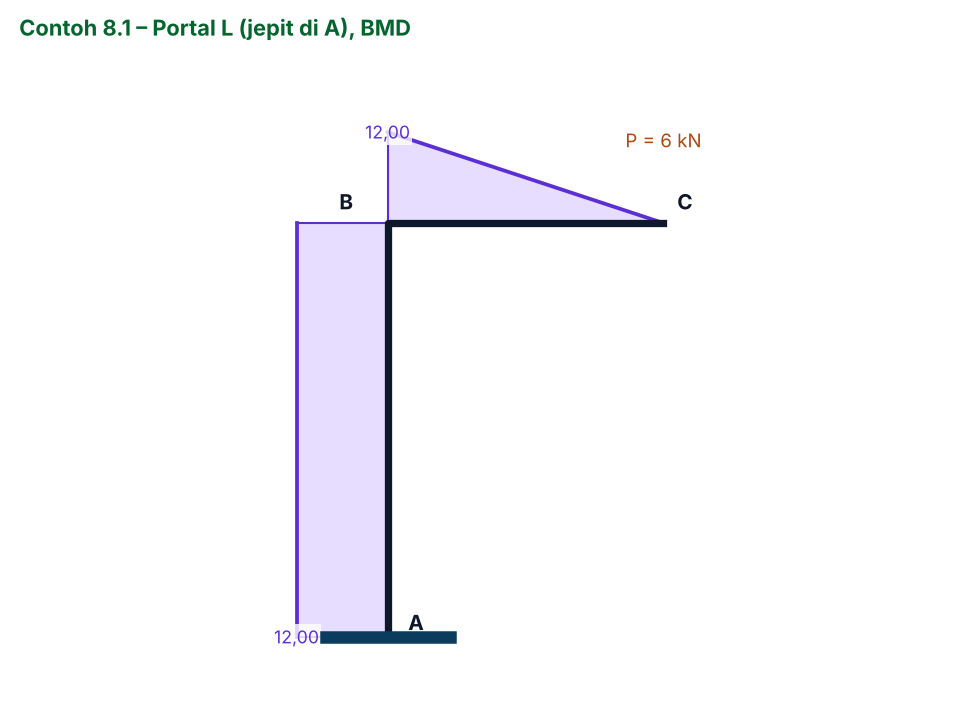

Minggu 9 • Sub-CPMK 3.2 • CPMK-3 • CPL 2 / IK 2.2 • Estimasi belajar: 120 menit mandiri + 220 menit kelas/studio
2. Capaian Pembelajaran
Sub-CPMK 3.2: Mahasiswa mampu menganalisis portal statis tertentu.
| Kode | Indikator | Level Bloom |
|---|---|---|
| 3.2.a | Menjelaskan perilaku titik kumpul kaku pada portal | C2 – menjelaskan |
| 3.2.b | Menghitung reaksi portal L (jepit) dan portal sendi–rol | C3 – menghitung |
| 3.2.c | Menghitung N, V, M tiap batang portal | C3–C4 |
| 3.2.d | Menggambar NFD, SFD, BMD portal di sisi yang benar | C4 – menganalisis |
| 3.2.e | Memeriksa kesetimbangan titik sudut | C4 – memeriksa |
Kriteria (RPS): reaksi, NFD, SFD, BMD portal L dan portal sendi–rol benar.
3. Peta Konsep Bab
Balok (Bab 4–7) → (8.1) portal: balok + kolom yang disambung kaku
Titik kumpul kaku → momen diteruskan melewati sudut
Reaksi → (8.2) portal L (jepit) dan portal sendi–rol
Gaya dalam → (8.3) N, V, M per batang; BMD di sisi tarik
Pemeriksaan → (8.4) kesetimbangan titik sudut → Bab 9 (portal tiga sendi)
4. Apersepsi
Diskusi gambar nyata: carport rumah dengan dua kolom baja dan balok di atasnya; gudang kecil dengan kolom dan balok beton. Saat angin kencang, mengapa kolom carport bisa miring di bagian bawah, padahal yang terkena angin adalah atapnya?
Pertanyaan pemantik: Apa bedanya kolom yang hanya “ditaruh” di bawah balok dengan kolom yang dicor menyatu dengan balok?
Gambar 8.1. Portal carport dan gudang kecil (ilustrasi baru, sumber: dokumen penulis)
Teks alternatif: Dua foto/ilustrasi: carport baja dengan kolom dan balok tersambung kaku di sudut; gudang beton satu lantai dengan portal balok–kolom; sudut kaku ditandai.
Prompt gambar: Educational illustration of two simple building frames in Indonesia: a steel carport portal frame and a small one-storey concrete warehouse frame, rigid corner joints highlighted with glowing cyan, wind arrow on the roof, technical style, navy background, no text
5. Uraian Materi
8.1 Portal dan Titik Kumpul Kaku
Portal (frame) adalah struktur yang terdiri atas balok dan kolom yang disambung kaku. Pada sambungan kaku, sudut antara balok dan kolom tidak berubah ketika struktur melentur, sehingga momen diteruskan dari balok ke kolom. Inilah perbedaan utama dengan balok di atas tumpuan.
Analogi: rangka kursi kayu yang dipaku dan dilem kuat di sudutnya. Jika sandaran didorong, kaki kursi ikut melentur karena sudutnya kaku.
Pada titik sudut tanpa momen luar, momen di ujung kolom = momen di ujung balok (besar sama, sisi tarik “berbelok” mengikuti sudut).
Gaya lintang di kolom menjadi gaya normal di balok, dan sebaliknya.
Statis tertentu bila jumlah reaksi = 3 (portal tanpa sendi dalam): portal L dengan jepit, atau portal dengan sendi dan rol.
8.2 Reaksi Portal L dan Portal Sendi–Rol
Prosedur sama dengan balok: DBB seluruh portal → ΣFx = 0, ΣFy = 0, ΣM = 0. Perhatikan beban horizontal (angin, gempa) yang menghasilkan momen terhadap tumpuan karena bekerja di ketinggian tertentu.

Gambar 8.2. BMD portal L Contoh 8.1 (digambar di sisi tarik).

Gambar 8.3. BMD portal sendi–rol Contoh 8.3. Angin memindahkan sebagian beban ke kolom kanan dan menimbulkan momen di kolom kiri.
8.3 NFD, SFD, dan BMD Portal
Hitung reaksi dan periksa.
Pilih lintasan dari satu tumpuan (misalnya A → B → C → D). Untuk tiap batang, tentukan sisi dalam (garis putus).
Potong tiap batang; pakai DBB bagian dari awal lintasan sampai potongan → N, V, M.
Gambar NFD dan SFD (nilai dan tanda), BMD di sisi tarik.
Periksa titik sudut (8.4) dan nilai di ujung lintasan (harus sesuai reaksi tumpuan akhir).
| Batang | N (kN) | V (kN) | M (kN·m) |
|---|---|---|---|
| AB (kolom kiri) | –6,33 (tekan) | 4,00 (konstan) | 0 → 16,00 (tarik dalam) |
| BC (balok) | 0 | +6,33 → –11,67 (nol di x = 2,11 m) | 16,00 → 22,69 (maks) → 0 |
| CD (kolom kanan) | –11,67 (tekan) | 0 | 0 |
Tabel 8.1. Ringkasan gaya dalam Contoh 8.3.
8.4 Kesetimbangan Titik Sudut
Potong titik sudut dari semua batang yang bertemu; gambar N, V, M ujung batang sebagai gaya luar pada “titik kecil” itu. Titik harus setimbang: ΣFx = 0, ΣFy = 0, ΣM = 0.
6. Contoh Soal & Pembahasan
Empat contoh: 8.1 portal L, 8.2–8.3 portal sendi–rol, 8.4 pemeriksaan titik sudut; tiga BMD digambar dari hasil hitungan.
7. Tanya AI Tutor
Jelaskan lebih sederhana
Jelaskan apa itu sambungan kaku pada portal dengan analogi kursi kayu. Tanyakan saya di mana momen terbesar portal carport saat angin.
Periksa sisi BMD saya
Saya menggambar BMD kolom di sisi luar. Bimbing saya memeriksa apakah itu sisi tarik.
Beri contoh lain
Beri 3 portal statis tertentu di sekitar kampus dan minta saya menentukan jenis tumpuannya.
Buat soal latihan
Buat 2 soal portal sendi–rol dengan beban merata dan beban horizontal. Sembunyikan jawaban.
Ringkas bab ini
Ringkas Bab 8 dalam 5 langkah menggambar NFD, SFD, BMD portal.
8. Zona AR – Portal Carport
| Aspek | Spesifikasi |
|---|---|
| Nama objek | ar-bab08-carport.glb (+ .usdz) |
| Tujuan belajar | Melihat perbedaan sambungan kaku dan sendi serta deformasi portal akibat angin (indikator 3.2.a, 3.2.d) |
| Pembuatan model | SketchUp/Revit: carport baja 6 × 4 m dengan kolom pipa/WF, atap; Blender: animasi deformasi (dibesarkan); GLB ≤ 8 MB |
| Hotspot & label | (1) Sambungan sudut kaku; (2) Tumpuan sendi/rol; (3) Beban atap; (4) Angin; (5) Sisi tarik (merah) |
| Animasi | Penggeser “angin 0–4 kN”: portal bergoyang, BMD 3D muncul di sisi tarik |
| Kode QR | Menuju ar/bab-08.html |
| Cadangan | Gambar 8.3 dan video 360° |
| Pertanyaan pengamatan | (a) Kolom mana yang melentur saat angin? (b) Mengapa kolom di atas rol tidak melentur? (c) Apa yang terjadi bila sambungan sudut diganti sendi? |
- Sambungan sudut kaku
- Tumpuan sendi
- Tumpuan rol
Buka halaman AR penuh • Perangkat tanpa AR tetap dapat memutar model 360° dengan jari/tetikus.
9. Alat Hitung – Portal Statis Tertentu
| Aspek | Spesifikasi |
|---|---|
| Tujuan | Reaksi dan NFD, SFD, BMD portal L (jepit) dan portal persegi sendi–rol |
| Rumus | \(\Sigma F_x=0;\ \Sigma F_y=0;\ \Sigma M=0;\ M(s)=-\sum_{\text{lintasan}} \vec r\times\vec F\) |
| Input | Jenis portal; tinggi kolom h (m; 1–10); bentang L (m; 1–20); beban merata balok, beban titik (vertikal/horizontal) di sembarang titik |
| Output | Reaksi; tabel N, V, M tiap batang; nilai di sudut; Mmaks dan lokasi; diagram pada gambar portal (sisi tarik) |
| Validasi | Rol harus di kaki portal; peringatan bila portal labil (mis. dua rol) |
| Fitur | Tombol “Periksa titik sudut”; reset; salin; ekspor CSV/PDF/PNG |
| Kasus uji | Input | Hasil yang diharapkan | Rujukan |
|---|---|---|---|
| 1 | Portal L: h = 3, L = 2, P = 6 di C | RA = 6; MA = 12 kN·m | Contoh 8.1 |
| 2 | Sendi–rol: h = 4, L = 6, q = 3 | RA = RD = 9; Mmaks = 13,50 | Contoh 8.2 |
| 3 | Sendi–rol: h = 4, L = 6, q = 3, H = 4 di B | HA = –4; RA = 6,33; RD = 11,67; M_B = 16,00; Mmaks = 22,69 | Contoh 8.3 |
10. Studi Kasus Mini – Carport Miring setelah Angin Kencang
Sebuah carport baja (h = 2,6 m, L = 5 m) di perumahan dekat pantai Padang miring setelah angin kencang. Kaki kiri dibaut ke fondasi (dianggap sendi), kaki kanan hanya diletakkan di atas pelat (dianggap rol). Beban atap q = 0,8 kN/m; angin 2,5 kN di puncak kolom kiri.
Hitung reaksi dan momen di sudut kiri.
Jelaskan mengapa kolom kiri menderita lebih berat daripada kolom kanan.
Usulkan perbaikan murah dan aman.
Kunci dosen: HA = 2,5 kN (←); RD = (0,8 × 5 × 2,5 + 2,5 × 2,6) ÷ 5 = (10 + 6,5) ÷ 5 = 3,30 kN; RA = 4 – 3,30 = 0,70 kN; M sudut kiri = 2,5 × 2,6 = 6,50 kN·m. Kolom kiri memikul seluruh geser angin karena rol tidak menahan gaya horizontal. Perbaikan: angkur kaki kanan (jadikan sendi) dan tambah pengaku diagonal.
11. Info Penting / Tips Lapangan / Peringatan K3
Info Penting di 8.1; Tips Lapangan dan Peringatan K3 di 8.4.
12. Rangkuman
Portal = balok + kolom bersambungan kaku; momen diteruskan melewati sudut.
Portal statis tertentu: 3 reaksi (portal L jepit atau sendi–rol).
Beban horizontal di ketinggian h menimbulkan momen h × H terhadap kaki portal.
BMD portal digambar di sisi tarik; momen di sudut sama untuk balok dan kolom (tanpa momen luar).
Periksa kesetimbangan titik sudut untuk menguji konsistensi.
13. Latihan & Kuis Interaktif (11 soal)
Sambungan portal yang meneruskan momen disebut …
Pembahasan: Lihat 8.1.
Pada sudut portal tanpa momen luar, momen ujung balok sama dengan momen ujung kolom.
Pembahasan: Kesetimbangan titik sudut.
BMD portal digambar pada …
Pembahasan: Lihat Info Penting 8.1.
Portal L: kolom 4 m dijepit, balok 1,5 m, P = 8 kN di ujung balok. MA = … kN·m
Pembahasan: 8 × 1,5.
Soal no. 4: gaya normal kolom = … kN
Pembahasan: Tekan.
Portal sendi–rol, h = 3 m, L = 5 m, hanya angin 3 kN di puncak kolom kiri. RD = … kN
Pembahasan: ΣMA: RD × 5 = 3 × 3.
Soal no. 6: momen di sudut kiri = … kN·m
Pembahasan: HA × h = 3 × 3.
Portal sendi–rol, L = 8 m, q = 2,5 kN/m pada balok saja. Mmaks balok = … kN·m
Pembahasan: 2,5 × 64 ÷ 8.
Pada portal sendi–rol dengan beban angin, kolom di atas rol …
Pembahasan: Rol tidak memberi gaya horizontal.
Rina menggambar momen kolom Contoh 8.3 sama besar di seluruh tinggi kolom (16 kN·m). Penilaian …
Pembahasan: Sendi A memberi M = 0.
Rancang perubahan tumpuan carport pada Studi Kasus agar momen di sudut kiri berkurang. Hitung momen sudut setelah perubahan bila kedua kaki menjadi sendi dengan geser angin dibagi rata (anggapan sederhana).
Pembahasan: Catatan: portal dua sendi statis tak tentu; pembagian rata adalah pendekatan. Rubrik: ide 40, hitungan 40, catatan asumsi 20.
14. Refleksi Diri
Saya dapat menjelaskan sambungan kaku dan pengaruhnya. 1 2 3 4 5
Saya dapat menghitung reaksi portal. 1 2 3 4 5
Saya dapat menggambar BMD portal di sisi tarik. 1 2 3 4 5
Saya dapat memeriksa titik sudut. 1 2 3 4 5
Apa yang sudah/belum saya pahami? • Tindak lanjut: skor ≤ 3 → gambar ulang Gambar 8.3 dengan Alat Hitung Portal dan diskusikan sisi tarik dengan tutor sebaya.
15. Glosarium dan Referensi Bab
| Istilah | Arti |
|---|---|
| Portal | Struktur balok–kolom dengan sambungan kaku. |
| Sambungan kaku | Sambungan yang mempertahankan sudut antarbatang dan meneruskan momen. |
| Sisi tarik | Sisi batang yang memanjang akibat momen; tempat BMD digambar. |
| Bracing | Pengaku diagonal untuk menahan goyangan. |
Hibbeler, R. C. (2024b). Structural analysis (11th ed.). Pearson. (Bab 4: frames)
Leet, K. M., Uang, C.-M., Lanning, J. T., & Gilbert, A. M. (2018). Fundamentals of structural analysis (5th ed.). McGraw-Hill. (Bab 5)